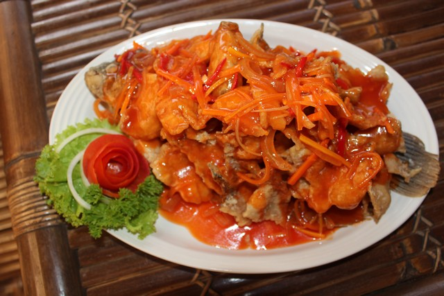

Resep ikan nila asam manis

Bahan-Bahan:
- 4 ekor ikan nila, bersihkan, kerat kedua sisinya
- ½ sdt garam
- 1 sdm air jeruk nipis
- 4 sdm tepung terigu Minyak, untuk menggoreng
Saus asam manis pedas- 3 siung bawang putih
- 100g bawang bombay, cincang
- 200ml air
- 100g Jawara Saus Sambal Extra Hot
- 1sdt gula pasir
- 1sdt Royco Kaldu Ayam
- 200g nanas, potong segitiga
- 1sdm tepung maizena, larutkan dengan 2 sdm air
- 3 sdm minyak, untuk menumis
Langkah-Langkah:
- Langkah 1
- Lumuri ikan nila dengan air jeruk nipis dan garam. Diamkan selama 10 menit.
- Langkah 2
- Letakkan ikan ke atas piring berisi tepung terigu. Lumuri hingga permukaannya tertutup merata. Sisihkan.
- Langkah 3
- Panaskan minyak, goreng ikan nila hingga matang dan kecokelatan. Angkat dan tiriskan. Sisihkan.
Langkah 4- Saus asam manis: Panaskan minyak, tumis bawang putih dan bawang bombay hingga harum. Tuang air, Jawara Saus Sambal Extra Hot, gula pasir, dan Royco Kaldu Ayam. Masak sambil diaduk hingga mendidih.
Langkah 5- Tambahkan nanas, masak hingga layu. Angkat.
Langkah 6- Sajikan ikan nila goreng dengan saus asam pedas manis.